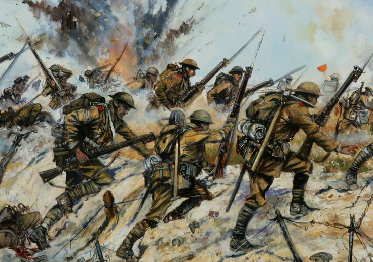
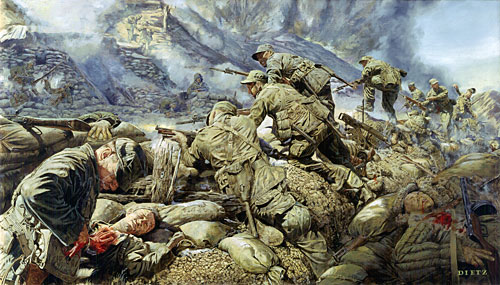

Overview
World War I
Although World War I lasted from 1914 to 1918, the United States would not enter the war until April of 1917 after Germany's continued provocations against America through their constant unrestricted submarine warfare and their Zimmerman Telegram to Mexico. The American Expeditionary Force until General John Pershing would arrive in summer of 1918, helping the allies to end the war, with the Allied Powers winning the war on November 11, 1918.
World War II

After World War I, the Second World War (1939-1945) would break out in 1939, and the United States would continue to remain their policy of neutrality in wars; until that neutrality would end on December 7, 1941 after the Pearl Harbor attacks, with Japan and Germany declaring war on America. This war turned the United States into a world superpower after becoming the only country in history to develop and use a nuclear bomb in war.
Korean War
With the sudden rise in Communism from the Cold War follow World War II, the United States began to get involved in world affairs. In June of 1950, the Communist North Korea, aided by the Soviet Union and China, invaded the Democratic South Korea, supported by the United Nations, led by the United States. Over 35,000 Americans died during the war which lasted from 1950 until the armistice in July, 1953.